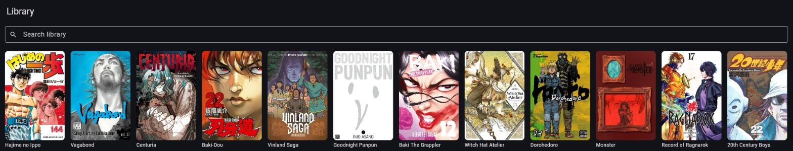
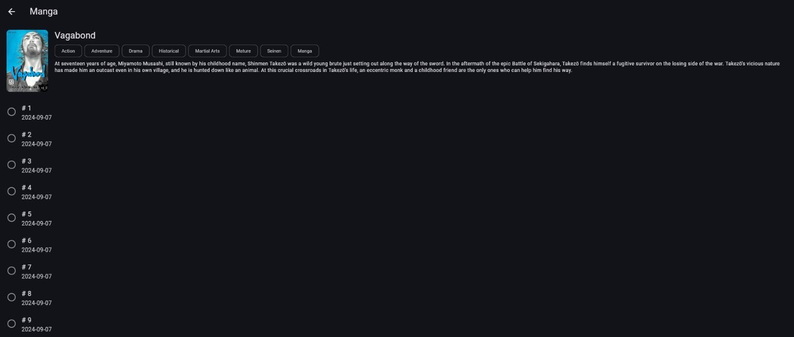

Kai-Shelf is a cross-platform reader for the manga & comics server you already self-host. Browse your library, read offline, and keep progress in sync — no accounts, no telemetry, just your server.


Paste a server URL and Kai-Shelf figures out whether it's talking to Suwayomi, Komga, or Kavita — no manual setup.
Queue single chapters or batch-download the next 5, next 10, or an entire series. Reading auto-caches upcoming pages in the background.
Switch between traditional paged reading and continuous vertical scroll, with reading progress synced back to your server.
Search installed Suwayomi sources right from the app and add new manga to your library without leaving Kai-Shelf.
Sort chapters ascending or descending, and mark any chapter read or unread manually — auto-marking still happens when you finish a chapter.
Kai-Shelf talks directly to the server you already run. Nothing is collected, nothing is proxied.